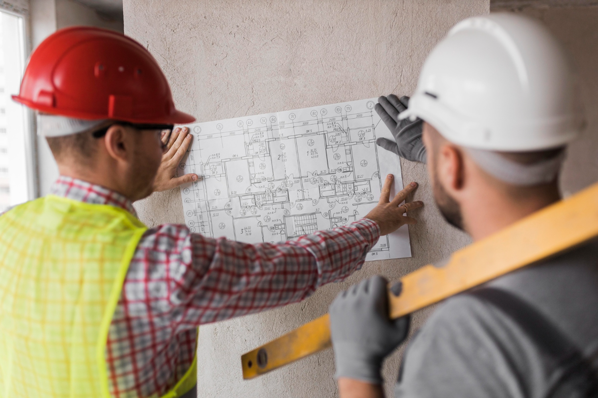

Construir tu casa empieza mucho antes de la obra
Esta guía te acompaña en el momento más importante: cuando todavía estás a tiempo de evitar errores, ahorrar dinero y tomar decisiones con claridad.
Quiero empezar con seguridadSi estás por construir y tenés dudas, este ebook es para vos
- ✔ Estás por construir y no sabés por dónde empezar
- ✔ Tenés miedo de equivocarte y gastar de más
- ✔ Tenés ideas sueltas pero no un plan claro
- ✔ Querés hablar con profesionales con más seguridad
- ✔ Querés evitar improvisar decisiones importantes
¿Qué te llevás con esta guía?
✔ Orden mental antes de empezar
✔ Claridad para definir tus necesidades reales
✔ Herramientas para evitar errores comunes
✔ Criterio para tomar mejores decisiones
✔ Una base sólida antes de hablar con profesionales
No reemplaza a un arquitecto. Te prepara para aprovecharlo mejor.
Qué vas a encontrar en el ebook
- Pensar tu casa más allá del plano
- Errores frecuentes en la etapa de preobra
- Definir necesidades reales
- Organización del presupuesto inicial
- Primer análisis del terreno
- Cómo ordenar el proyecto
- Cómo relacionarte con profesionales
- Preparación previa a la obra
- Checklist final antes de empezar

Creado desde la experiencia real
Esta guía nace del trabajo cotidiano en diseño y planificación de viviendas. Está pensada para personas reales, con dudas reales, que quieren construir sin improvisar.

Empezá tu casa con claridad
Tomar buenas decisiones antes de construir puede ahorrarte tiempo, dinero y frustraciones.
Comprar guía de preobra